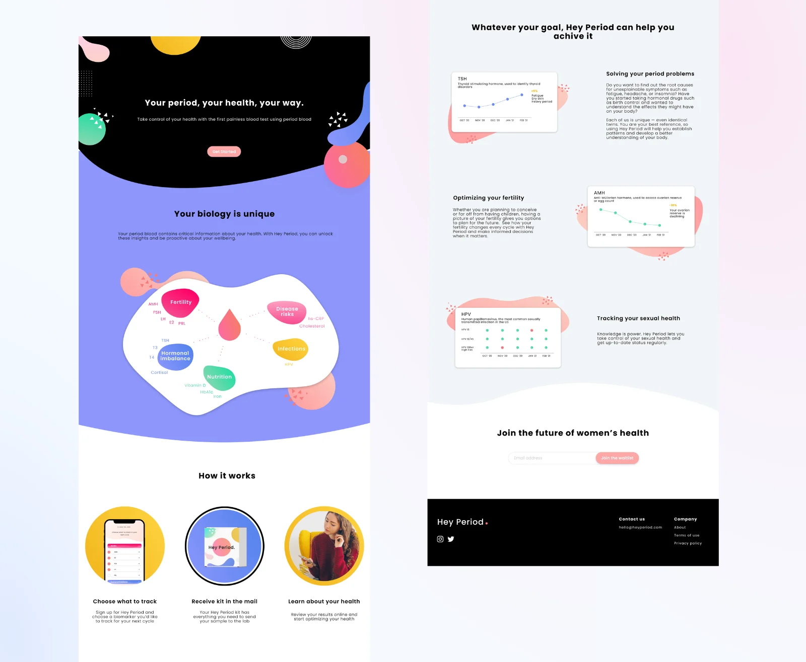

Hey Period — a trustworthy face for femtech's boldest idea
Hey Period is a healthcare platform that lets women track their health through blood tests — using menstrual blood. To build a waitlist during R&D, the startup needed a brand people would trust with something this personal. As the sole product designer, I created the brand identity, marketing website, and mobile UI, working directly with the Head of Product.

A blood test that uses period blood is a genuinely new idea — and new ideas in healthcare have a trust problem. The brand had to do two jobs at once: feel credible enough for a lab and warm enough for a group chat. Everything below — palette, type, website, app — is in service of that balance.
RESEARCH
I began by interviewing women about their experiences with period tracking and healthcare products. The target users are 18–35 year old women who have periods and want to track their health — for reasons as different as athletic performance and chronic pain. Two personas anchored the design process:


IDENTITY
Research kept surfacing the same tension: the audience wants a brand they can trust, but also one that offers fun and a sense of community — and the team wanted to stand apart from every other women's health startup. I distilled this into mood boards, then a colorful palette built around a neon reddish pink. The pink deliberately echoes Flo, the most popular period tracker, borrowing its familiarity and trustworthiness — while the supporting colors push the brand somewhere more whimsical.
- Palette — neon pink anchored by periwinkle, marigold, mint, and blush: energetic without tipping into childish
- Type — Poppins: bubbly and playful, but geometric enough to stay clear and easy to read
- System — logo lockups, organic blob shapes, and packaging for the test kit itself

WEBSITE
With the brand defined, I designed the marketing website to bring it to life — and to earn waitlist signups. Working with the Head of Product, I created every asset showcasing Hey Period's features and refined the marketing copy: what your biology can tell you, how the kit works in three steps, and what each biomarker means for your goals — period problems, fertility, or sexual health.

DESIGN
I came onboard as the team was building the app that accompanies the blood-testing kit. They had low-fidelity mockups and needed visual design to carry the new brand into a high-fidelity prototype. The befores and afters tell the story — same bones, entirely different presence:


A young startup's priorities change weekly — sometimes daily. The craft was staying adaptable without letting the brand drift.